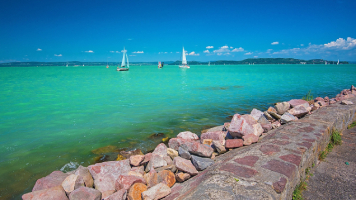
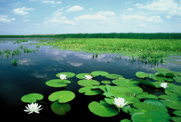
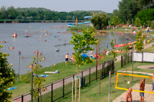

Balaton
A Balaton Közép-Európa és egyben Magyarország legnagyobb tava, legjelentősebb turisztikai központja. A Balaton északi partjának nevezetességét népművészeti és természeti értékei jelentik. Itt egyaránt találhatóak műemlékekben gazdag történelmi települések (pl. Tihany, Keszthely), különleges természeti értékek (tapolcai tavasbarlang, badacsontomaji arborétum), romantikus kastélyok és várromok (Nagyvázsony, Szigliget). A déli part is számos látnivalót tartogat az ideutazó számára. Míg a tó északi partján gyorsabban mélyülő partokkal találkoznak a fürdőzők, addig a déli parton a víz sekélyebb, lassabban mélyül. Számos kedvelt és nemzetközileg ismert strandja van, közülük több megkapta a Kék Hullám Zászló elismerést. De nemcsak a fürdőzés szerelmesei találják meg a számukra megfelelő élményeket, a tó körül számos egyéb lehetőség is van. Élményfürdők, sétahajózás, kalandparkok (többek között Zánkán, Zamárdiban, Balatonfüreden) és természetjárás - ez csak néhány azok közül a szórakozási lehetőségek közül, melyek a Balatonnál várják a turistákat. Végeláthatatlan program, szabadtéri rendezvény, és koncert megrendezésre kerül a tónál, melyek főként a fiatalokat vonzzák. Kihagyhatatlan program a hajózás, amelyre remek lehetőséget kínálnak a menetrendszerint közlekedő hajók, esténként pedig a diszkóhajók is. A leginkább népszerű kikötőnek Badacsony és Tihany számítanak.
Tisza-tó
A Tisza-tó, a legnagyobb mesterséges tó a Tiszán. A 127 km2 kiterjedésű Tisza-tó hazánk második legnagyobb összefüggő vízfelülete, az általa nyújtott lehetőségek száma alapján viszont bátran tekinthetjük elsőnek. A fürödni és napozni vágyó családtól, a lelkes horgászon és vadászon keresztül a megszállott ornitológusig itt szinte mindenki megtalálhatja a számára ideális elfoglaltságot. A tó déli vidékén elhelyezkedő Abádszalóki-öböl (Attila öböl) a Tisza-tó legjelentősebb turisztikai vonzereje. Már évek óta itt rendezik meg a legjelentősebb rendezvényeket, mint például a Tisza-tó Szépe, Kumpír fesztivál, Homokfoci-, Strandröplabda-bajnokság, Tiszator.Az aktívabb pihenés kedvelői olyan népszerű motoros vízisportokat (pl. jet-ski) is űzhetnek, melyre máshol nincs lehetőségük. Az észak-nyugati részen található tiszafüredi madárrezervátum európai jelentőségű élőhely, ahol mintegy 200 madárfaj található, így az ornitológusok igazi paradicsoma. A Sarudi-medence szintén egyedülálló adottságokkal rendelkezik. Gazdag állat- és növényvilágával, apró holtágaival, csatornáival és szigeteivel az igazi, érintetlen természet látszatát kelti. Ideális hely a csónakázni, horgászni, vadászni vagy egyszerűen csak pihenni vágyók számára. A pihenni és gyógyulni vágyóknak számos lehetőségük van élvezni a főként ízületi és mozgásszervi megbetegedések kezelésére szolgáló termál- és gyógyfürdők jótékony hatását.
Szelidi tó
Szelid neve a közeli Várdomb erõdítményével és a török idõk harcaival függhet össze, ugyanis a török csapatok a magyar túlerõt látva, megállásra és kompromisszumokra kényszerültek "megszelidültek" ezen a területen. A tavat a még a Duna vize mélyített ki évezredekkel ezelõtt. Jelenleg 4km hosszú, szélessége átlagosan 150-200m között mozog, átlagos vízmélysége 3-4 méter, vize nyáron akár 28°C-ra is felmelegedhet, így fürdõzésre kiválóan alkalmas. A talajból sok nátrium-magnézium-karbonát és nátrium-jodid oldódik ki, ezért már a középkorban sebgyógyításra használták, ma inkább idegrendszeri, hormonális és reumatikus bántalmak kezelésére ajánlják. Vize szagtalan a gyógyfürdõkkel ellentétben, jelenleg még nem minõsített gyógyvíz, ezért üdülõfalu létesült a környezetében. A Szelidi-tavat 360 hektáros természetvédelmi terület övezi, ami növényi gazdagságával a Kiskunsági Nemzeti Park egyik gyöngyszeme. A tó környékén így kellemes sétákat vagy kerékpártúrákat tehet az idelátogató.A vendégeket egy ingyenesen látogatható szabad strand és egy nagyobb igényesen kialakított fizetõstrand várja. A parton vízibiciklik, csónakok, kenuk, és surfök bérelhetõk, így akár rövidebb vízi túrák is tehetõk. A gyerekeket kiépített játszóterek és egy óriás vízicsúzda várja. A horgászat kedvelõi sem csalódhatnak a tóban amúr, keszeg, kárász, ponty és törpeharcsa rendszeresen akad a horgokra.